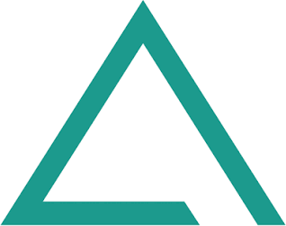

ACTO
AI Engineer Intern
- Cut median quote-build time 4× (from ~120 to 30 min) for 10+ sales reps by replacing a legacy Excel pricing calculator with a natural-language LLM sales agent.
- Ensured every quoted price is computed deterministically by architecting a hybrid system in which a deterministic pricing engine calculates all figures and the LLM only narrates them, confining hallucination and prompt-injection risk to explanatory text.
- Delivered citation-backed answers traceable to source documents by building a retrieval-augmented generation (RAG) pipeline over an Amazon OpenSearch Serverless vector index.
- Shipped the full-stack B2B platform hosting the agent, including SSO, three-tier role-based access control, PDF order-form generation, and token-secured proposal pages with engagement analytics.